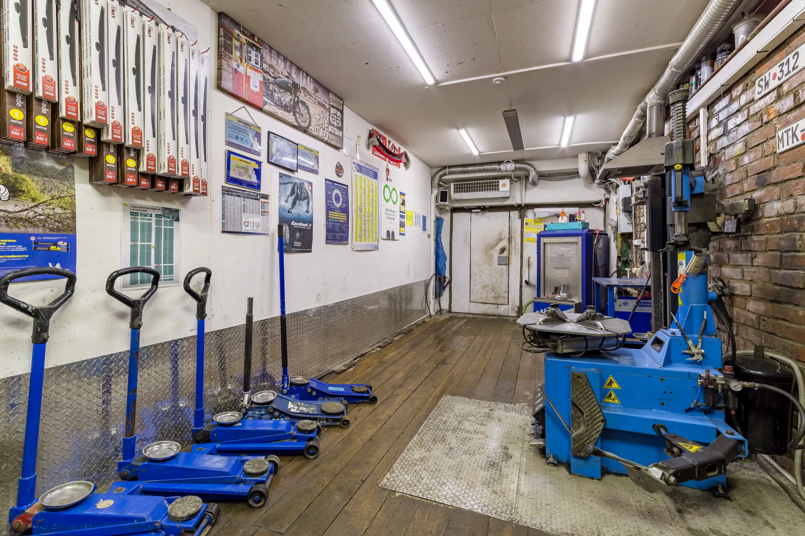
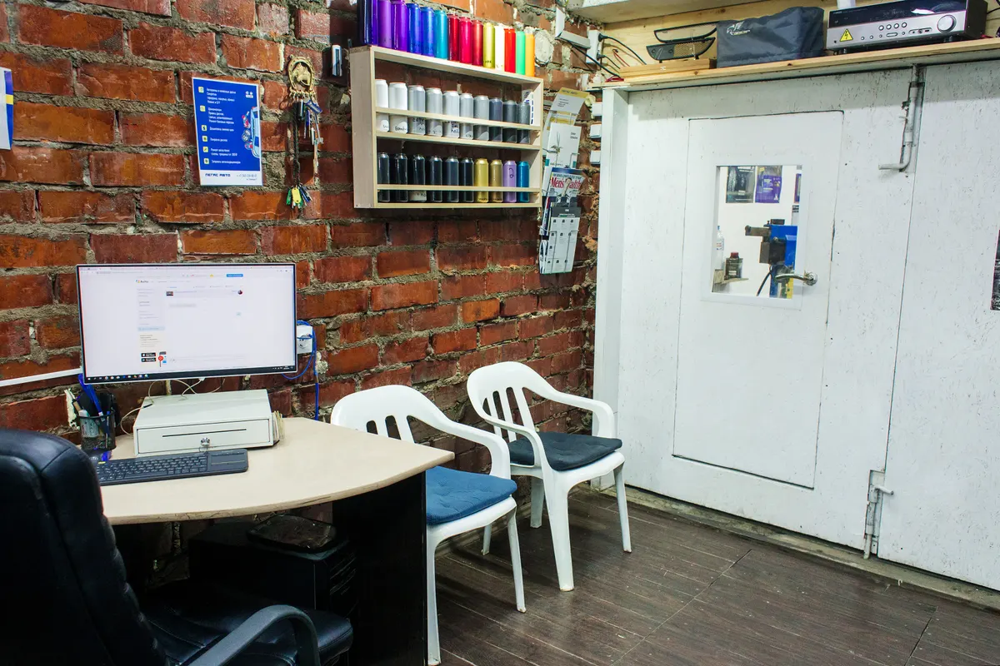
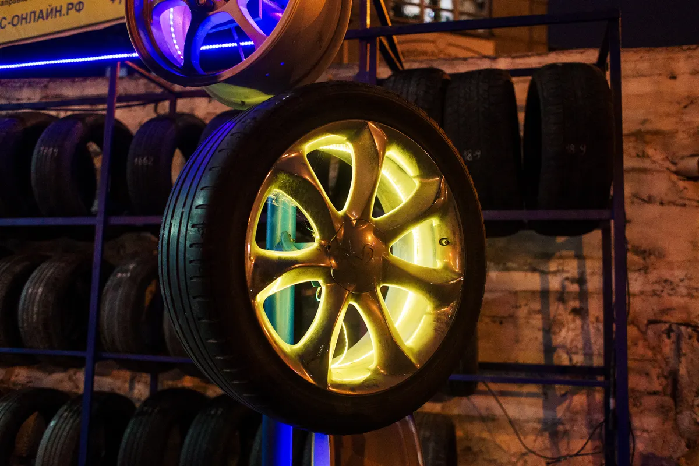
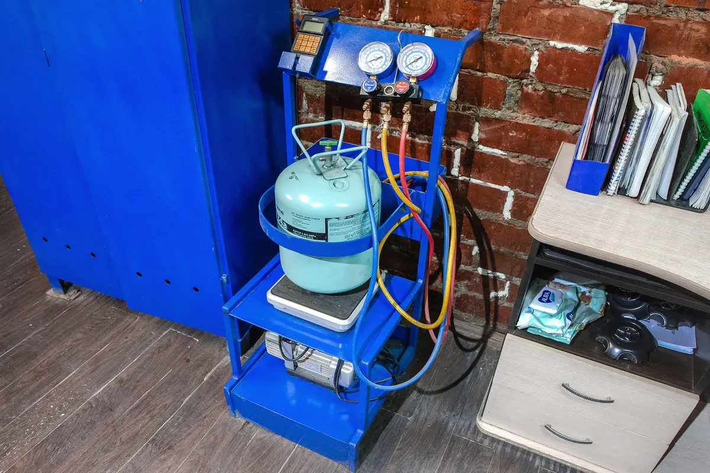

Шиномонтаж · Екатеринбург
Шиномонтаж в Екатеринбурге, где не навязывают лишнего
Переобуем, отремонтируем шину, выправим и покрасим диски, подберём резину. Подскажем честно, решаете вы.
- Шины и диски: продажа, покупка, обмен
- Правка и порошковая покраска дисков
- Пн–пт 9:00–20:00, сб–вс 10:00–19:00

Услуги и цены
Точную сумму для вашей машины назовём по телефону.
Шины и колёса
- Переобувка комплектазависит от радиуса и машиныот 900 ₽
- Ремонт шины300 ₽
- Балансировкауточнить
- Дошиповка зимних шинуточнить
- Хранение шинуточнить
- Подбор и продажа шинзимние, летние, всесезонныеуточнить
Диски и другое
- Порошковая покраска дисковот 1 000 ₽
- Пескоструйная обработка дисковуточнить
- Правка и прокатка дисковуточнить
- Диски новые и б/упродажа, покупка, обменуточнить
- Заправка автокондиционерауточнить
Как проходит
- 01
Позвонили
Договорились о дне и времени.
- 02
Приехали
Ул. Готвальда, 9. Пн–пт с 9:00 до 20:00, сб–вс с 10:00 до 19:00.
- 03
Мастер смотрит и советует
Говорит, что стоит сделать, а что нет. Решаете вы.
- 04
Оплатили и поехали
Можно картой.



Что отмечают клиенты
Лишнего не навязывают
Клиенты пишут об этом в отзывах: подскажут, но решать вам.
Всё по колёсам в одном месте
Шиномонтаж, правка и покраска дисков, подбор и продажа резины.
Ездят годами
Многие клиенты переобуваются здесь не первый год.
Чай и кофе, пока ждёте
Есть зона ожидания со столом и креслами.
Отзывы с Яндекс.Карт
«Отличный шиномонтаж! Приезжаю туда не первый год, всегда быстро и качественно! Если есть необходимость всегда проконсультируют, но никогда ничего лишнего не навязывают! Отдельная благодарность Ильдару, за прекрасное отношение и грамотный подход к любой проблеме!»
Ирина · 10 ноября 2023
«Самый лучший шиномонтаж. Колеса заказала у них же, пришли на следующий день. Быстро качественно все поставили. Старую резину можно оставить. Работники 🔥»
Елена В. · 14 декабря 2025
«Отличная мастерская. Приезжаю сюда много лет, отзывчивый персонал, посоветуют, порекомендуют. Так же есть пескоструйная обработка дисков и покраска порошковой краской.»
Юрий С. · 9 июня
Отзывы с карточки на Яндекс.Картах, без правок.
Частые вопросы
Как записаться?
Позвоните по номеру +7 (343) 328-80-01 и договоритесь о времени.
Сколько стоит переобувка?
От 900 ₽ за комплект, точная цена зависит от радиуса и машины – назовём по телефону.
Можно купить у вас шины?
Да, шины и диски, новые и б/у: продажа, покупка и обмен. Подберём резину под вашу машину.
Красите диски?
Да, порошковая покраска дисков – от 1000 ₽, есть пескоструйная обработка, правка и прокатка.
Как оплатить?
Можно картой.
Позвоните – подберём время
- Адрес
- Готвальда, 9, Екатеринбург
- Часы
- Пн–пт 09:00–20:00, сб–вс 10:00–19:00
- Телефон
- +7 (343) 328-80-01